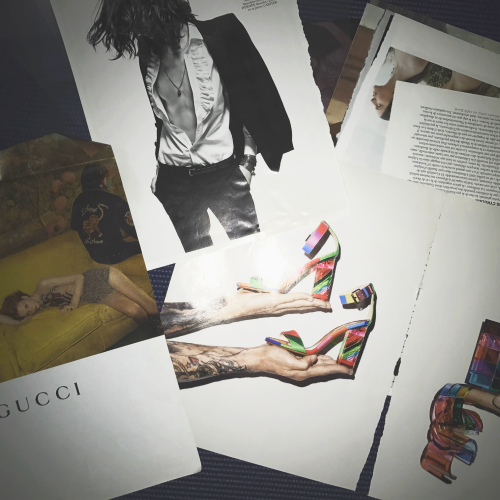
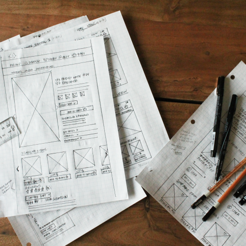

Before I was a designer, I taught English as a Second Language (ESL) while living in different cities: Los Angeles, Buenos Aires, and Paris. Aside from design, my huge passions are cooking, eating, and traveling. Being an English teacher allowed me to travel around the world and immerse myself in different cultures. After traveling, I moved to New York City to work for a startup in the Education Technology field. I was in love with the tech world, but was ready for something that combined my interests in technology, business, and visual design. UX Design was the perfect intersection of my skills and interests.
A collection of some of my favorite ads
My relationship with design began in the pages of Vogue. The first 12 pages - the ads - are still my favorite part of reading the magazine. These were my first interactions with the power of graphic design, and I was fascinated by the way that imagery and layout came together to tell a cohesive brand story. From fashion, it was a logical next step to digital design. I enrolled in a design bootcamp to have a formal design education and have my work reviewed by professionals. This experience ended up changing my life and the course of my professional career in ways I didn't expect: I had finally found the direction I was meant to go.
Working at home on wireframes
I believe that successful design: has intent, is backed in research, and brings joy to the user. For me, the important parts of the design process are the ones that nobody sees: rigorous user research, thorough prototyping and testing, rapid sketching - this is where the hard work is done to bring together a product and a user. From there, the digital world allows us so many opportunities.